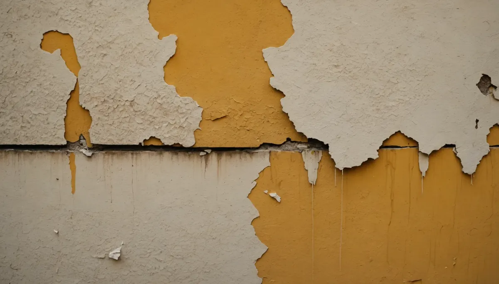
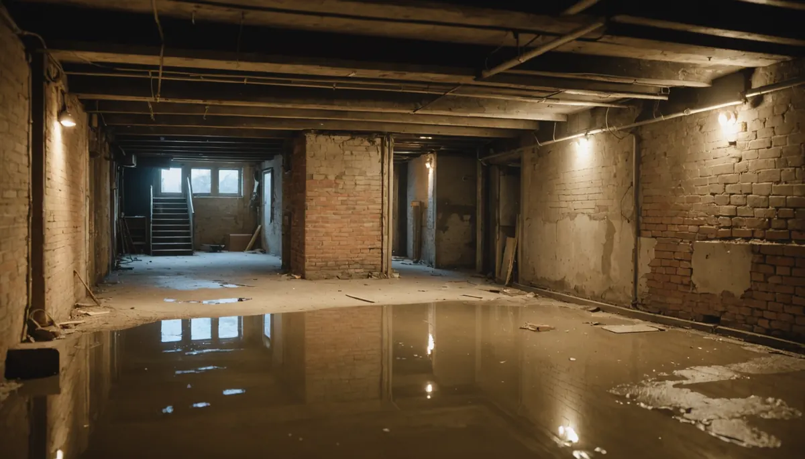

Water leaks can feel like a minor annoyance, yet they often lead to catastrophic consequences if ignored. These leaks can escalate from a simple drip to severe damage in your home or building. We will explore the hidden costs associated with water leaks, showing that the true expense goes far beyond just repairs and addressing the long-term effects for homeowners and property managers.
Understanding Water Leaks
What appears to be a small drip or a little stain might be just the tip of the iceberg. A seemingly harmless leak can lead to extensive damage, affecting walls, ceilings, floors, and even your property’s structure. For example, according to the Environmental Protection Agency, leaks account for nearly 1 trillion gallons of water wasted annually in the U.S. This emphasizes that even small leaks can add up to significant issues over time.
The Immediate Costs of Repair
When a leak is detected, a homeowner faces several immediate costs to get it fixed. This includes:
- Plumber Fees: Hiring a professional plumber can cost anywhere from $150 to $450 for a standard leak repair. More complex issues can easily reach $1,000 or more depending on the leak’s location.
- Material Costs: Replacing damaged pipes or drywall can lead to significant expenses. For instance, high-quality drywall typically costs about $10 per panel, and replacing water-damaged flooring might run from $1 to $5 per square foot.
- Additional Repairs: Accessories like faucets or damaged cabinetry can further inflate costs. Homeowners have reported expenses of $300 to $800 for related replacements.
Long-Term Structural Damage
The danger of water leaks extends well beyond the initial repair. If a leak goes unchecked, it can lead to serious long-term issues:
- Foundation Stability: Water exposure can weaken the foundation of a building. Estimates show that repairing foundation damage can range from $2,000 to $7,000, depending on the severity.
- Mold Growth: Mold can start to develop within just 24 to 48 hours of exposure to moisture. Mold remediation can cost anywhere from $500 to $6,000, depending on the extent of the growth and the affected area.
- Pest Infestations: A wet environment can attract pests like termites, which can lead to further repair costs. Termite damage can average $3,000 to $5,000 in repairs.
Increased Utility Bills
Many homeowners overlook the impact of leaks on their utility bills. Small leaks can increase water usage significantly. The U.S. Geological Survey estimates that even a slow drip from a faucet can waste more than 3,000 gallons of water per year, contributing to water bills that can rise by 10% to 15% or more if leaks are left unchecked.
Insurance Implications
Insurance coverage can play a crucial role when dealing with water damage, but the specifics can vary widely.
- Coverage Limits: Some insurance policies may cap their coverage for water damage. If an extensive leak occurs, repair costs might surpass these limits, leaving homeowners to cover the difference.
- Deductibles: Many policies come with high deductibles, sometimes between $500 and $2,000 or more because your deductible may be a percentage of your home value. This means that families may have to pay out-of-pocket before their insurance takes effect.
Impact on Property Value
An undetected leak can hurt the resale value of a property. Potential buyers often steer clear of homes with a history of water-related issues, leading to decreased market interest and lower offers. According to research, homes affected by water damage can see a 10% to 25% reduction in value during resale.

Health Risks
Mold growth from water leaks poses significant health risks. Research indicates that prolonged mold exposure can lead to various respiratory problems, allergies, and asthma. This can result in:
- Increased Medical Expenses: Families may face higher medical costs due to doctor visits and treatments for mold-related illnesses.
- Decreased Quality of Life: Health problems can lead to emotional stress and financial strain, making it crucial to address leaks quickly.
Preventative Measures: Save in the Long Run
The financial burden from water leaks makes a strong case for prevention. Investing in maintenance can protect property and finances. Consider these steps:
- Regular Inspections: Schedule plumbing inspections with Angle Stop Plumbing at least once a year to spot leaks early and address them before they escalate.
- Water Leak Smart Valve: Install water leak sensors that will send signals to a master control valve shutting water off to structure prior to a major leak that alert homeowners to potential leaks, allowing for visual inspection.
- Educate Family Members: Raise awareness about leak signs among everyone in the household. Knowing what to look for can lead to early detection and preventative actions.
Final Thoughts
Water leaks may seem trivial, but the hidden costs can snowball, leading to serious financial and health challenges. From repair expenses to long-term structural issues, mold growth, increased utility bills, and lowered property values, the effects are extensive.
Homeowners and property managers need to be proactive in spotting and resolving leaks. Understanding the comprehensive impact of unnoticed leaks helps safeguard properties and maintain financial health. By staying informed with Angle Stop Plumbing's comprehensive annual inspection you too can understand how your plumbing system is performing and taking preventative action, individuals can save themselves from costly and stressful repairs down the line.
